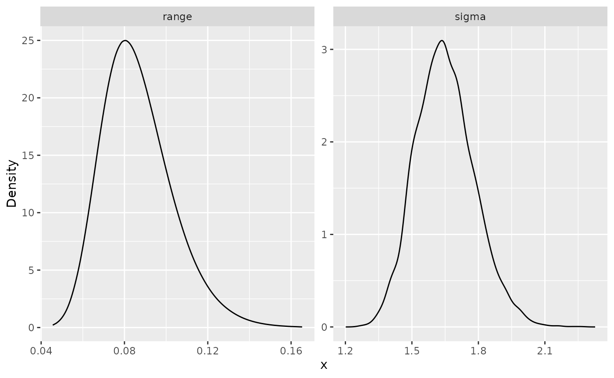
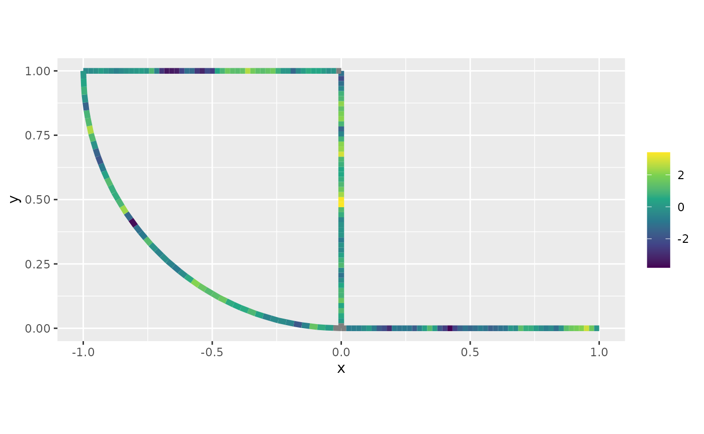
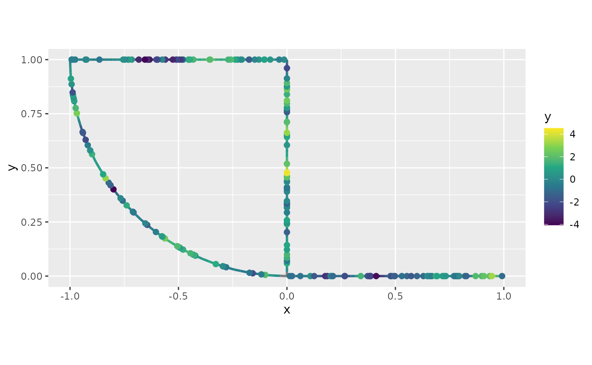

INLA interface for Whittle--Matérn fields on metric graphs
David Bolin, Alexandre B. Simas, and Jonas Wallin
Created: 2022-11-23. Last modified: 2023-11-14.
Source:vignettes/inla_interface.Rmd
inla_interface.RmdIntroduction
In this vignette we will present our R-INLA interface to
Whittle–Matérn fields. The underlying theory for this approach is
provided in Bolin, Simas, and Wallin (2023a) and Bolin,
Simas, and Wallin (2023b).
For an introduction to the metric_graph class, please
see the Working with metric graphs
vignette.
For handling data manipulation on metric graphs, see Data manipulation on metric graphs
For a simplification of the R-INLA interface, see the inlabru interface of Whittle–Matérn
fields vignette.
In the Gaussian random fields on metric
graphs vignette, we introduce all the models in metric graphs
contained in this package, as well as, how to perform statistical tasks
on these models, but without the R-INLA or
inlabru interfaces.
We will present our R-INLA interface to the
Whittle-Matérn fields by providing a step-by-step illustration.
The Whittle–Matérn fields are specified as solutions to the stochastic differential equation \[ (\kappa^2 - \Delta)^{\alpha} \tau u = \mathcal{W} \] on the metric graph \(\Gamma\). We can work with these models without any approximations if the smoothness parameter \(\alpha\) is an integer, and this is what we focus on in this vignette. For details on the case of a general smoothness parameter, see Whittle–Matérn fields with general smoothness.
A toy dataset
Let us begin by loading the MetricGraph package and
creating a metric graph:
library(MetricGraph)
edge1 <- rbind(c(0,0),c(1,0))
edge2 <- rbind(c(0,0),c(0,1))
edge3 <- rbind(c(0,1),c(-1,1))
theta <- seq(from=pi,to=3*pi/2,length.out = 20)
edge4 <- cbind(sin(theta),1+ cos(theta))
edges = list(edge1, edge2, edge3, edge4)
graph <- metric_graph$new(edges = edges)Let us add 50 random locations in each edge where we will have observations:
obs_per_edge <- 50
obs_loc <- NULL
for(i in 1:(graph$nE)) {
obs_loc <- rbind(obs_loc,
cbind(rep(i,obs_per_edge),
runif(obs_per_edge)))
}We will now sample in these observation locations and plot the latent field:
sigma <- 2
alpha <- 1
nu <- alpha - 0.5
r <- 0.15 # r stands for range
u <- sample_spde(range = r, sigma = sigma, alpha = alpha,
graph = graph, PtE = obs_loc)
graph$plot(X = u, X_loc = obs_loc)
Let us now generate the observed responses, which we will call
y. We will also plot the observed responses on the metric
graph.
n_obs <- length(u)
sigma.e <- 0.1
y <- u + sigma.e * rnorm(n_obs)
graph$plot(X = y, X_loc = obs_loc)
R-INLA implementation
We are now in a position to fit the model with our
R-INLA implementation. To this end, we need to add the
observations to the graph, which we will do with the
add_observations() method.
df_graph <- data.frame(y = y, edge_number = obs_loc[,1],
distance_on_edge = obs_loc[,2])
# Adding observations and turning them to vertices
graph$add_observations(data=df_graph, normalized=TRUE)
graph$plot(data="y")Now, we load the R-INLA package and create the
inla model object with the graph_spde
function. By default we have alpha=1.
library(INLA)
spde_model <- graph_spde(graph)Now, we need to create the data object with the
graph_data_spde() function, in which we need to provide a
name for the random effect, which we will call field:
data_spde <- graph_data_spde(graph_spde = spde_model, name = "field")The remaining is standard in R-INLA. We create the
formula object and the inla.stack object with the
inla.stack() function. The data needs to be in the
graph (by using the add_observations() method)
and should be supplied to the stack by the components of the
data_spde list obtained from the
graph_data_spde() function:
f.s <- y ~ -1 + Intercept + f(field, model = spde_model)
stk_dat <- inla.stack(data = data_spde[["data"]],
A = data_spde[["basis"]],
effects = c(
data_spde[["index"]],
list(Intercept = 1)
))Now, we use the inla.stack.data() function:
data_stk <- inla.stack.data(stk_dat)Finally, we fit the model:
spde_fit <- inla(f.s, data = data_stk)Let us now obtain the estimates in the original scale by using the
spde_metric_graph_result() function, then taking a
summary():
spde_result <- spde_metric_graph_result(spde_fit, "field", spde_model)
summary(spde_result)## mean sd 0.025quant 0.5quant 0.975quant mode
## sigma 1.6488500 0.1366810 1.3974900 1.6429900 1.938880 1.6440900
## range 0.0864656 0.0171461 0.0583896 0.0844985 0.125487 0.0805441We will now compare the means of the estimated values with the true values:
result_df <- data.frame(
parameter = c("std.dev", "range"),
true = c(sigma, r),
mean = c(
spde_result$summary.sigma$mean,
spde_result$summary.range$mean
),
mode = c(
spde_result$summary.sigma$mode,
spde_result$summary.range$mode
)
)
print(result_df)## parameter true mean mode
## 1 std.dev 2.00 1.64884688 1.64409183
## 2 range 0.15 0.08646555 0.08054408We can also plot the posterior marginal densities with the help of
the gg_df() function:
posterior_df_fit <- gg_df(spde_result)
library(ggplot2)
ggplot(posterior_df_fit) + geom_line(aes(x = x, y = y)) +
facet_wrap(~parameter, scales = "free") + labs(y = "Density")
Kriging with our INLA implementation
Let us begin by obtaining an evenly spaced mesh with respect to the base graph:
obs_per_edge_prd <- 50
graph$build_mesh(n = obs_per_edge_prd)Let us plot the resulting graph:
graph$plot(mesh=TRUE)We will now add the observations on the mesh locations to the graph
we fitted the R-INLA model. To this end we will use the
add_mesh_observations() method. We will enter the response
variables as NA. We can get the number of mesh nodes by
counting the number of rows of the mesh$PtE attribute.
n_obs_mesh <- nrow(graph$mesh$PtE)
y_prd <- rep(NA, n_obs_mesh)
data_mesh <- data.frame(y = y_prd)
graph$add_mesh_observations(data = data_mesh)We will now fit a new model with R-INLA with this new
graph that contains the prediction locations. To this end, we create a
new model object with the graph_spde() function:
spde_model_prd <- graph_spde(graph)Now, let us create a new data object for prediction. Observe that we
need to set drop_all_na to FALSE in order to
not remove the prediction locations:
data_spde_prd <- graph_data_spde(spde_model_prd, drop_all_na = FALSE, name="field")We will create a new vector of response variables, concatenating
y to y_prd, then create a new formula object
and the inla.stack object:
f_s_prd <- y ~ -1 + Intercept + f(field, model = spde_model_prd)
stk_dat_prd <- inla.stack(data = data_spde_prd[["data"]],
A = data_spde_prd[["basis"]],
effects = c(
data_spde_prd[["index"]],
list(Intercept = 1)
))Now, we use the inla.stack.data() function and fit the
model:
data_stk_prd <- inla.stack.data(stk_dat_prd)
spde_fit_prd <- inla(f_s_prd, data = data_stk_prd)We will now extract the means at the prediction locations:
idx_prd <- which(is.na(data_spde_prd[["data"]][["y"]]))
m_prd <- spde_fit_prd$summary.fitted.values$mean[idx_prd]To improve visualization, we will plot the posterior means using the
plot() method:
graph$plot_function(X = m_prd, vertex_size = 0, edge_width = 2)
Finally, we can plot the predictions together with the data:
p <- graph$plot_function(X = m_prd, vertex_size = 0, edge_width = 1)
graph$plot(data="y", vertex_size = 0, data_size = 2, p = p, edge_width = 0)
Fitting R-INLA models with replicates
We will now illustrate how to use our R-INLA
implementation to fit models with replicates.
To simplify exposition, we will use the same base graph. So, we begin by clearing the observations.
graph$clear_observations()We will use the same observation locations as for the previous cases. Let us sample 30 replicates:
sigma_rep <- 1.5
alpha_rep <- 1
nu_rep <- alpha_rep - 0.5
r_rep <- 0.2 # r stands for range
kappa_rep <- sqrt(8 * nu_rep) / r_rep
n_repl <- 30
u_rep <- sample_spde(range = r_rep, sigma = sigma_rep,
alpha = alpha_rep,
graph = graph, PtE = obs_loc,
nsim = n_repl)Let us now generate the observed responses, which we will call
y_rep.
n_obs_rep <- nrow(u_rep)
sigma_e <- 0.1
y_rep <- u_rep + sigma_e * matrix(rnorm(n_obs_rep * n_repl),
ncol=n_repl)The sample_spde() function returns a matrix in which
each replicate is a column. We need to stack the columns together and a
column to indicate the replicate:
dl_graph <- lapply(1:ncol(y_rep), function(i){data.frame(y = y_rep[,i],
edge_number = obs_loc[,1],
distance_on_edge = obs_loc[,2],
repl = i)})
dl_graph <- do.call(rbind, dl_graph)We can now add the the observations by setting the group
argument to repl:
graph$add_observations(data = dl_graph, normalized=TRUE,
group = "repl",
edge_number = "edge_number",
distance_on_edge = "distance_on_edge")By definition the plot() method plots the first
replicate. We can select the other replicates with the
group argument. See the Working with metric graphs for more
details.
graph$plot(data="y")
Let us plot another replicate:
graph$plot(data="y", group=2)
Let us now create the model object:
spde_model_rep <- graph_spde(graph)Let us first consider a case in which we do not use all replicates. Then, we consider the case in which we use all replicates.
Thus, let us assume we want only to consider replicates 1, 3, 5, 7
and 9. To this end, we the index object by using the
graph_data_spde() function with the argument
repl set to the replicates we want, in this case
c(1,3,5,7,9):
data_spde <- graph_data_spde(graph_spde=spde_model_rep,
name="field", repl = c(1,3,5,7,9))Next, we create the stack object, remembering that we need to input
the components from data_spde:
stk_dat_rep <- inla.stack(data = data_spde[["data"]],
A = data_spde[["basis"]],
effects = c(
data_spde[["index"]],
list(Intercept = 1)
))We now create the formula object, adding the name of the field (in
our case field) attached with .repl a the
replicate argument inside the f()
function.
f_s_rep <- y ~ -1 + Intercept +
f(field, model = spde_model_rep,
replicate = field.repl)Then, we create the stack object with The
inla.stack.data() function:
data_stk_rep <- inla.stack.data(stk_dat_rep)Now, we fit the model:
spde_fit_rep <- inla(f_s_rep, data = data_stk_rep)Let us see the estimated values in the original scale:
spde_result_rep <- spde_metric_graph_result(spde_fit_rep,
"field", spde_model_rep)
summary(spde_result_rep)## mean sd 0.025quant 0.5quant 0.975quant mode
## sigma 1.37869 0.0613607 1.264790 1.376630 1.507250 1.379530
## range 0.15949 0.0159061 0.131094 0.158476 0.193472 0.156197Let us compare with the true values:
result_df_rep <- data.frame(
parameter = c("std.dev", "range"),
true = c(sigma_rep, r_rep),
mean = c(
spde_result_rep$summary.sigma$mean,
spde_result_rep$summary.range$mean
),
mode = c(
spde_result_rep$summary.sigma$mode,
spde_result_rep$summary.range$mode
)
)
print(result_df_rep)## parameter true mean mode
## 1 std.dev 1.5 1.3786893 1.3795258
## 2 range 0.2 0.1594896 0.1561967Now, let us consider the case with all replicates. We create a new
data object by using the graph_data_spde() function with
the argument repl set to .all:
data_spde_rep <- graph_data_spde(graph_spde=spde_model_rep,
name="field",
repl = ".all")Now the stack:
stk_dat_rep <- inla.stack(data = data_spde_rep[["data"]],
A = data_spde_rep[["basis"]],
effects = c(
data_spde_rep[["index"]],
list(Intercept = 1)
))We now create the formula object in the same way as before:
f_s_rep <- y ~ -1 + Intercept +
f(field, model = spde_model_rep,
replicate = field.repl)Then, we create the stack object with The
inla.stack.data() function:
data_stk_rep <- inla.stack.data(stk_dat_rep)Now, we fit the model:
spde_fit_rep <- inla(f_s_rep, data = data_stk_rep)Let us see the estimated values in the original scale:
spde_result_rep <- spde_metric_graph_result(spde_fit_rep,
"field", spde_model_rep)
summary(spde_result_rep)## mean sd 0.025quant 0.5quant 0.975quant mode
## sigma 1.506900 0.0307479 1.448210 1.506290 1.56861 1.505130
## range 0.194149 0.0084304 0.177679 0.194156 0.21077 0.194405Let us compare with the true values:
result_df_rep <- data.frame(
parameter = c("std.dev", "range"),
true = c(sigma_rep, r_rep),
mean = c(
spde_result_rep$summary.sigma$mean,
spde_result_rep$summary.range$mean
),
mode = c(
spde_result_rep$summary.sigma$mode,
spde_result_rep$summary.range$mode
)
)
print(result_df_rep)## parameter true mean mode
## 1 std.dev 1.5 1.506898 1.5051265
## 2 range 0.2 0.194149 0.1944055